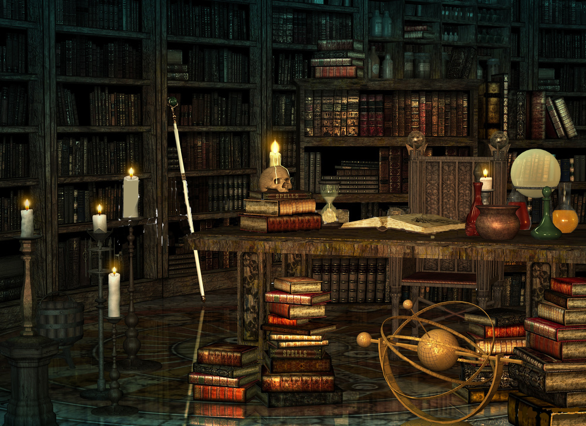

Actualites diverses du royaume
Musique du moment
Que diriez-vous de prendre un moment dans la foret pour vous poser et écouter cette musique a la fois melodieuse
et entrainante ?
Nouvelles relatives aux Elfes
Un nouveau decret royal interdit l exportation de bois de chene sacre pour ne pas encourager une surexploitation des ressources.
Un emissaire de l empire humain est attendu dans quelques jours a la cour pour etablir un pacte de non agression entre l'empire et le royaume sylvestre.
La celebre chanteuse Meyla Thun decide de se retirer definitivement de la scene apres une riche carriere de 720 ans.
Etablissement recommande du mois: la bibliotheque de Brisedent


Cette bibliotheque perdue au pied des montages de Brisedent vous permettra de prendre un peu de repos loin de toute agglomeration.
De nombreux livres inédits s y trouvent également pour le plus grand plaisir de tous les ferus de litterature. Enfin, si une petite
soif venait a troubler votre concentration, pas de soucis ! Une buvette a l accueil propose de l'excellente ambroisie ainsi qu'une
multitude de jus presses a partir de fruits alentours.
Petites annonces
Recherche compagnon de route pour partir a l aventure jusqu'au royaume sous-marin. Bonne humeur et sens de l'aventure au rendez-vous !
Maitre scribe cherche apprenti pour transmettre son savoir sur les runes anciennes et l'Histoire. L'apprenti devra au moins avoir passe l'age des grand arbres revolus.
Cherche artisan de talent pour reparer moulin a eau. Si interesse, me retrouver aux rivages de la riviere Tay non loin du village de Shaemoor.